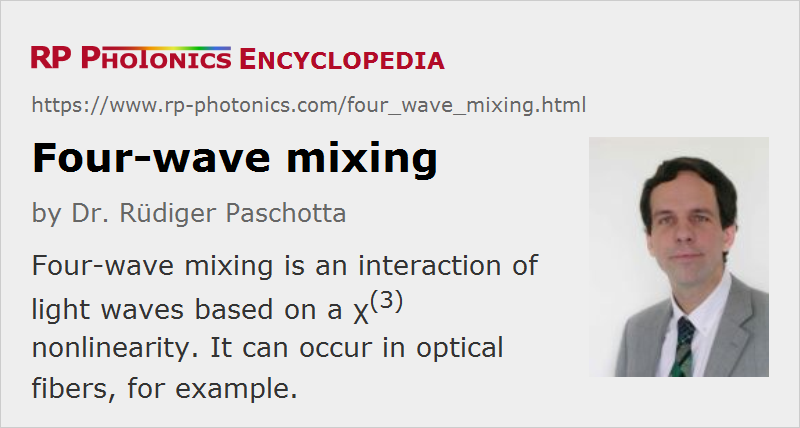

Four-wave Mixing
Acronym: FWM
Definition: an interaction of light waves based on a χ(3) nonlinearity
More general term: nonlinear effects
German: Vierwellenmischung
How to cite the article; suggest additional literature
Author: Dr. Rüdiger Paschotta
Four-wave mixing is a nonlinear effect arising from a third-order optical nonlinearity, as is described with a χ(3) coefficient. It can occur if at least two different frequency components propagate together in a nonlinear medium such as an optical fiber. Assuming just two input frequency components ν1 and ν2 (with ν2 > ν1), a refractive index modulation at the difference frequency occurs, which creates two additional frequency components (Figure 1). In effect, two new frequency components are generated: ν3 = ν1 − (ν2 − ν1) = 2 ν1 − ν2 and ν4 = ν2 + (ν2 − ν1) = 2 ν2 − ν1. Furthermore, a pre-existing wave a the frequency ν3 or ν4 can be amplified, i.e., it experiences parametric amplification [3].

In the explanation above, it was assumed that four different frequency components interact via four-wave mixing. This is called non-degenerate four-wave mixing. However, there is also the possibility of degenerate four-wave mixing, where two of the four frequencies coincide. For example, there can be a single pump wave providing amplification for a neighbored frequency component (a signal). For each photon added to the signal wave, two photons are taken away from the pump wave, and one is put into an idler wave with a frequency on the other side of the pump.
As four-wave mixing is a phase-sensitive process (i.e., the interaction depends on the relative phases of all beams), its effect can efficiently accumulate over longer distances e.g. in a fiber only if a phase-matching condition is satisfied. This is approximately the case if the frequencies involved are close to each other, or if the chromatic dispersion profile has a suitable shape. In other cases, where there is a strong phase mismatch, four-wave mixing is effectively suppressed. In bulk media, phase matching may also be achieved by using appropriate angles between the beams.
Four-wave mixing in fibers is related to self-phase modulation and cross-phase modulation: all these effects originate from the same (Kerr) nonlinearity and differ only in terms of degeneracy of the waves involved.
Four-wave mixing is relevant in a variety of different situations. Some examples are:
- It can be involved in strong spectral broadening in fiber amplifiers e.g. for nanosecond pulses. For some applications, this effect is made very strong and then called supercontinuum generation. Various nonlinear effects are involved here, and four-wave mixing is particularly important in situations with long pump pulses.
- The parametric amplification by four-wave mixing can be utilized in fiber-based optical parametric amplifiers (OPAs) and oscillators (OPOs). Here, the frequencies ν1 and ν2 often coincide. In contrast to OPOs and OPAs based on a χ(2) nonlinear medium, such fiber-based devices have a pump frequency between that of signal and idler.
- Four-wave mixing can have important deleterious effects in optical fiber communications, particularly in the context of wavelength division multiplexing, where it can cause cross-talk between different wavelength channels, and/or an imbalance of channel powers. One way to suppress this is avoiding an equidistant channel spacing.
- Four-wave mixing is applied for laser spectroscopy, most commonly in the form of coherent anti-Stokes Raman spectroscopy (CARS), where two input waves generate a detected signal with slightly higher optical frequency. With a variable time delay between the input beams, it is also possible to measure excited-state lifetimes and dephasing rates.
- Four-wave mixing can also be applied for phase conjugation, holographic imaging, and optical image processing.
Questions and Comments from Users
2020-06-19
Why do we consider exactly four frequency components? Why not more or less than four?
Answer from the author:
Certain optical nonlinearities – in particular, the Kerr nonlinearity – provide a mechanism for four frequency components to interact with each other. It cannot be more than four, since that would require a higher-order nonlinear process. It can be less, however, if we have frequency degeneracies.
Here you can submit questions and comments. As far as they get accepted by the author, they will appear above this paragraph together with the author’s answer. The author will decide on acceptance based on certain criteria. Essentially, the issue must be of sufficiently broad interest.
Please do not enter personal data here; we would otherwise delete it soon. (See also our privacy declaration.) If you wish to receive personal feedback or consultancy from the author, please contact him e.g. via e-mail.
By submitting the information, you give your consent to the potential publication of your inputs on our website according to our rules. (If you later retract your consent, we will delete those inputs.) As your inputs are first reviewed by the author, they may be published with some delay.
Bibliography
| [1] | R. L. Carman et al., “Observation of degenerate stimulated four-photon interaction and four-wave parametric amplification”, Phys. Rev. Lett. 17 (26), 1281 (1966), doi:10.1103/PhysRevLett.17.1281 |
| [2] | R. H. Stolen, “Phase-matched-stimulated four-photon mixing in silica-fiber waveguides”, IEEE J. Quantum Electron. 11 (3), 100 (1975), doi:10.1109/JQE.1975.1068571 |
| [3] | R. H. Stolen and J. E. Bjorkholm, “Parametric amplification and frequency conversion in optical fibers”, IEEE J. Quantum Electron. 18 (7), 1062 (1982), doi:10.1109/JQE.1982.1071660 |
| [4] | D. Nodop et al., “Efficient high-power generation of visible and mid-infrared light by degenerate four-wave-mixing in a large-mode-area photonic-crystal fiber”, Opt. Lett. 34 (22), 3499 (2009), doi:10.1364/OL.34.003499 |
See also: nonlinearities, Kerr effect, phase matching, dispersion, supercontinuum generation, wavelength division multiplexing
and other articles in the category nonlinear optics
|  |
If you like this page, please share the link with your friends and colleagues, e.g. via social media: 


These sharing buttons are implemented in a privacy-friendly way! |
2020-05-03
Is it true that the phase mismatch HAS to be zero? I keep reading that it must be zero but, then also read that this is only needed for high efficiency.
Answer from the author:
Indeed, such nonlinear processes can in principle occur for any phase mismatch, but they are then often highly inefficient. How strong the difference is, depends on the circumstances – essentially, on the accumulated (integrated) phase mismatch (in units of radians) over the whole propagation length.